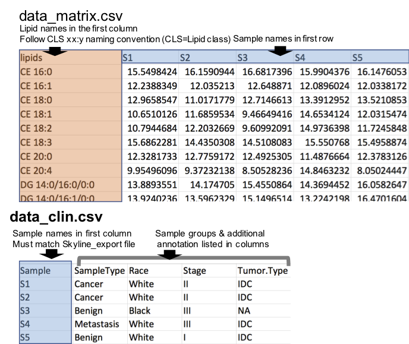
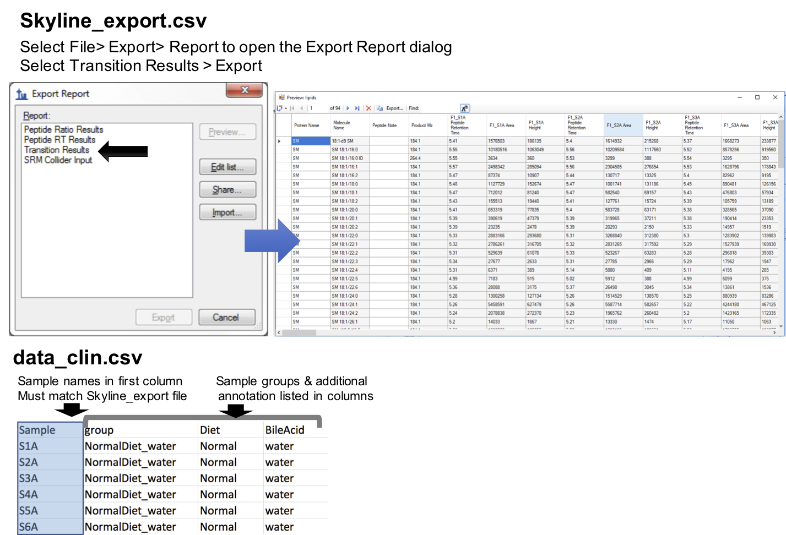

See full guide at lipidr.org
Input
Numerical Matrix
To use lipidr for your analysis using numerical matrix as input, you need 2 files:
- Numerical table where lipids are rows and samples are columns. Lipid names should be in the first column, and sample names are in the first row. (see example here)
- A table with the sample annotation / groups, where the sample names are in first column. Note the sample names must be identical in the two files. (see example here)

lipidr can convert these 2 files to LipidomicsExperiment as follows:
d <- as_lipidomics_experiment(read.csv("data_matrix.csv"))
d <- add_sample_annotation(d, "data_clin.csv")Export from Skyline
Here lipidr also requires 2 files:
- Results exported from Skyline as CSV file (see image below). (see example here)
- A table / CSV file with the sample annotation / groups, where the sample names are in first column. Note the sample names must be identical in the two files. (see example here)

In lipidr:
d <- read_skyline("Skyline_export.csv")
d <- add_sample_annotation(d, "data_clin.csv")LipidomicsExperiment Object
lipidr represents lipidomics datasets as a LipidomicsExperiment, which extends SummarizedExperiment, to facilitate integration with other Bioconductor packages.
Quality control & plotting
lipidr generates various plots, such as box plots or PCA, for quality control of samples and measured lipids. Lipids can be filtered by their %CV. Normalization methods with and without internal standards are also supported.
Univariate Analysis
Univariate analysis can be performed using any of the loaded clinical variables, which can be readily visualized as volcano plots. Multi-group comparisons and adjusting for confounding variables is also supported (refer to examples on www.lipidr.org). A novel lipid set enrichment analysis is implemented to detect preferential regulation of certain lipid classes, total chain lengths or unsaturation patterns. Plots for visualization of enrichment results are also implemented.
Install lipidr
From Bioconductor
In R console, type:
if (!requireNamespace("BiocManager", quietly=TRUE))
install.packages("BiocManager")
BiocManager::install("lipidr") Install development version from GitHub
In R console, type:
library(devtools)
install_github("ahmohamed/lipidr")Using Docker
You can use lipidr in a containerized form by pulling the image from docker hub.
docker pull ahmohamed/lipidr
docker run -e PASSWORD=bioc -p 8787:8787 ahmohamed/lipidr:latestIn your browser, navigate to RStudio will be available on your web browser at http://localhost:8787. The USER is fixed to always being rstudio. The password in the above command is given as bioc but it can be set to anything. For more information on how-to-use, refer to Bioconductor help page.
You can access your local files by mapping to the container:
docker run -e PASSWORD=bioc -p 8787:8787 \
-v "path/to/data_folder":"/home/rstudio/data_folder" \
ahmohamed/lipidr:latestYou should see data_folder in your working directory.